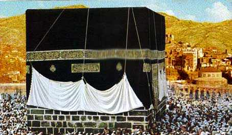

عزيزي القارئ هذه المعلومات من مصادر موثوفة وأخذناها من كتاب فتح مكه للكاتب عبد الحميد جوده السحار ننصحكم بعدم زيارة أي موقع إلا بالتحقق من مصدر المعلومات اللتي قدمها
هذا الكتاب يحكي عن اهم حدث حدث في التريخ الاسلامي وهو فتح المسلمين لمكة بعد ان قام كفار قريش باخراج محمد من مكة وبعد عقد صلح الحديبية قام كفار قريش باختراق هذا العقد والميثاق حتى انقلبت الموازين وأصبحت مكة تابعة للدولة الاسلامية
الاطراف : مشركين قريش ضد المسلمين بقيادة سيدنا محمد
فتح مكة هو أحد الأحداث الهامة في تاريخ الإسلام وقعت في العام 630 ميلادي، وقد تمثلت في دخول النبي محمد صلى الله عليه وسلم وجيش المسلمين إلى مكة المكرمة بعد سنوات من التضحيات والصبر. إليك ملخصًا لفتح مكة: التحالف الهدنة مع مكة: في عام 628 ميلادي، تم التوصل إلى اتفاق هدنة في الحديبية بين المسلمين ومكة، وكان الاتفاق لمدة عشر سنوات. انتهاك الهدنة: انتهك قريش الاتفاق بالهجوم على حلفاء المسلمين، وهو حلف بني كنانة. التحضير لفتح مكة: في عام 630 ميلادي، بدأ النبي محمد صلى الله عليه وسلم التحضير للمسيرة إلى مكة بجيش المسلمين. الدخول إلى مكة: وصل النبي محمد صلى الله عليه وسلم والمسلمون إلى مكة بدون مقاومة كبيرة، حيث كانت مكة تعج بالجيش الإسلامي. المصالحة مع مكة: بدلاً من التمثيل بالانتقام، أعلن النبي محمد صلى الله عليه وسلم عفوه ورحمته، وأعطى عام العفو الشامل. التطهير من الأصنام: أمر النبي بتدمير الأصنام الموجودة في الكعبة، وقام بتطهيرها من العبادات الوثنية. الدعوة إلى الإسلام: بعد فتح مكة، انتشرت الدعوة الإسلامية بشكل أوسع، وانضم عدد كبير من قريش إلى الإسلام. فتح مكة يعتبر حدثًا تاريخيًا هامًا يمثل الانتصار النهائي للإسلام وتأكيداً على سماحة وعفوية الرسالة الإسلامية.